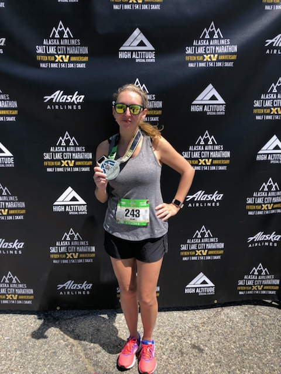
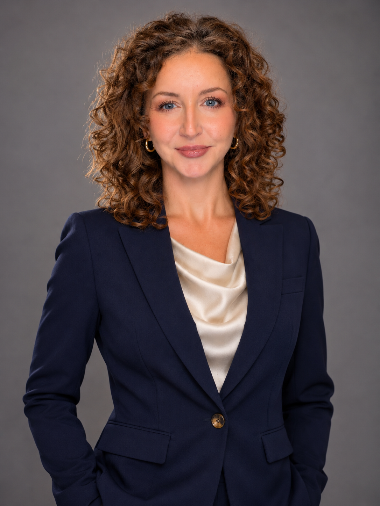
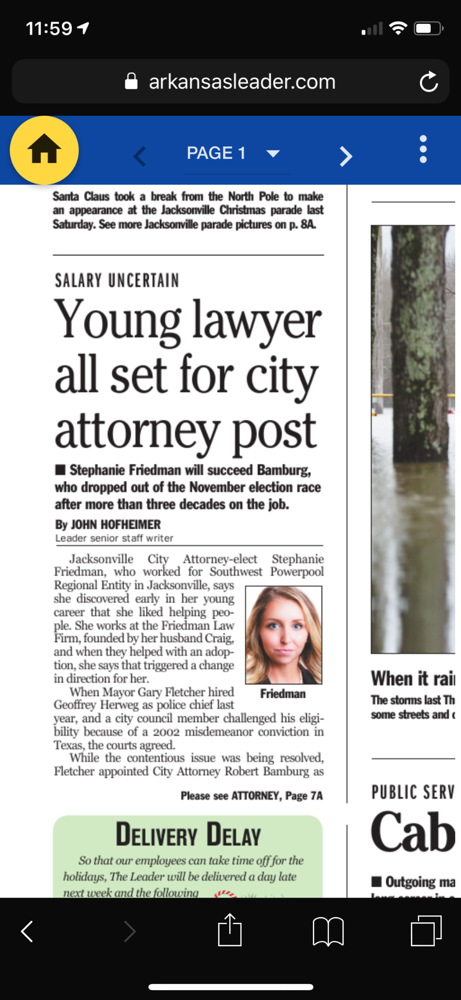
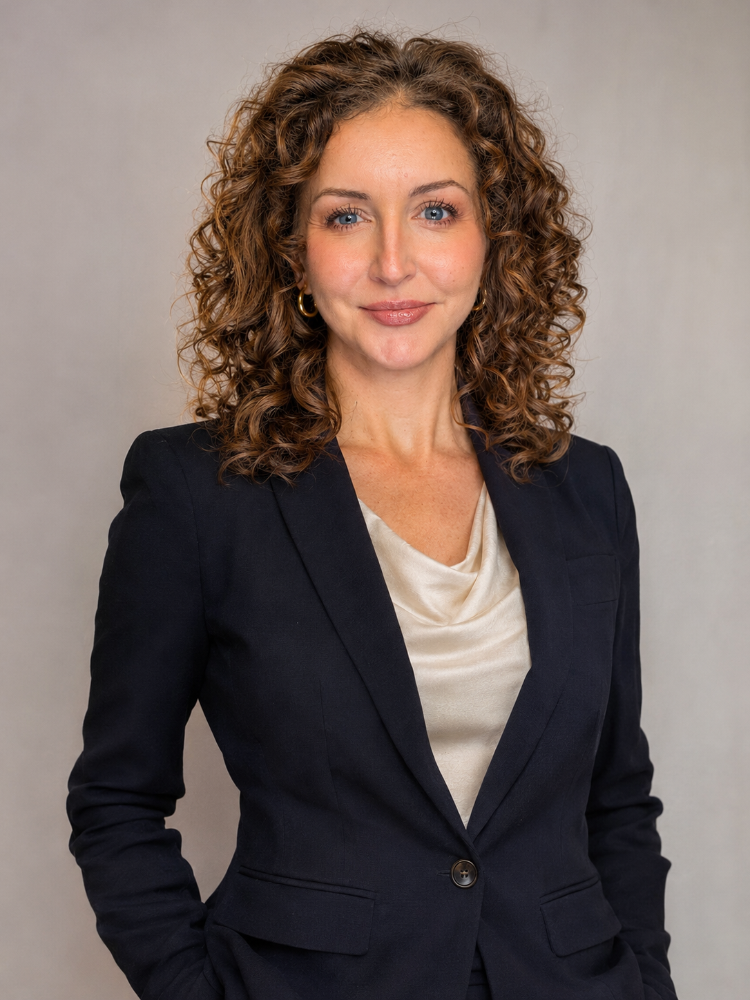

Finishing the Marathon
Crossing the finish line in Utah reinforced her belief that she has the willpower to finish hard things.
ATTORNEY · TRAVELER · MARATHON FINISHER
Meet Stephanie M. Friedman: determined in her work, curious about the world, and always ready for the next chapter.
Discover her story
THE MILESTONES

Crossing the finish line in Utah reinforced her belief that she has the willpower to finish hard things.

Stephanie was elected twice as City Attorney of Jacksonville, Arkansas, after pursuing law to help others.
Newspaper image: Arkansas Leader, supplied screenshot.

Passing the bar and building a legal career are milestones in a story centered on service and perseverance.
Beyond her professional achievements, Stephanie is an explorer at heart.
Explore her travels